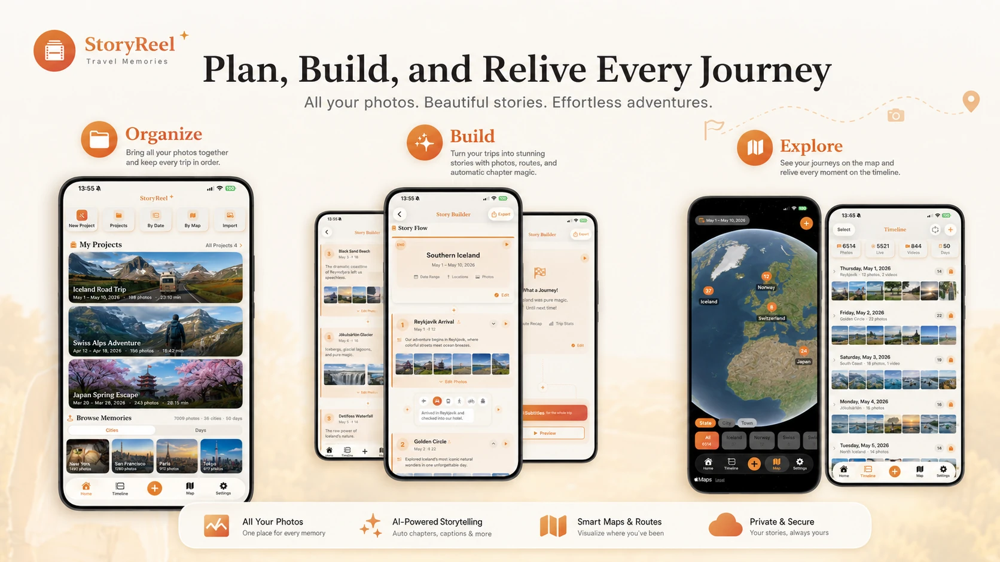
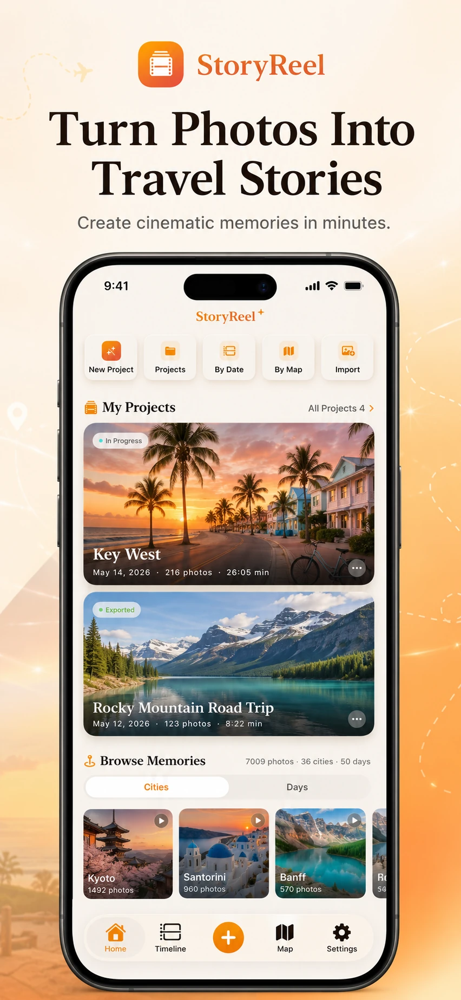
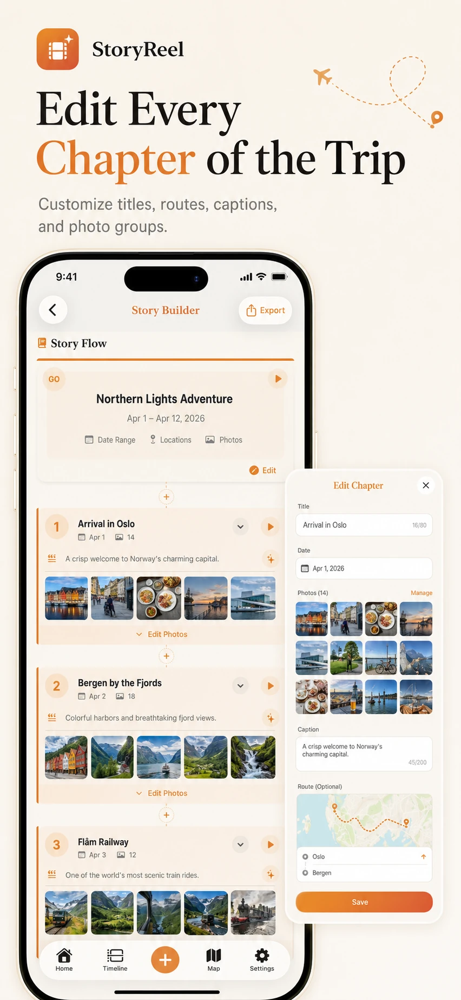
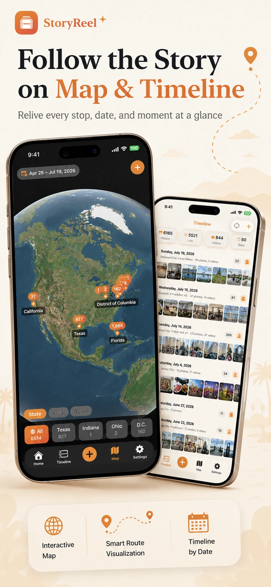

Photo & Video
StoryReel
Turn photos into
travel stories.
StoryReel turns a camera roll full of travel photos into a cinematic memory video. It already knows when and where every photo was taken — so it sorts, picks and sequences for you, and animates the route between places.

What it does
Built for one job,
done properly.

01Organize
Every trip, in one place.
Home keeps your video projects — in progress or exported — with dates, photo counts and running time. Browse Memories sorts your whole library by city or by day, so any old trip is a tap away from becoming a video.
- Shortcuts for a new project, by date, by map, or import
- Resume, rename, duplicate or delete any project
- Memories grouped by city or by day across your library
- No account — projects are saved on your iPhone

02Build
Edit every chapter of the trip.
Photos are grouped into chapters by place and date, with the best shots picked on device. The Story Builder lays out the whole video top to bottom — opening, route, chapters, music, captions and ending — and every part stays editable.
- Change a chapter's title, date, caption, photos and route
- Blinks, blurry shots and screenshots are filtered out for you
- Pick how you travelled between stops — plane, car, train and more
- Captions typed, dictated, or drafted by optional AI

03Explore & relive
Follow the story on map and timeline.
The Map tab puts every photo on a globe, from state down to city and town; the Timeline lays your camera roll out day by day with where you went. Tap a place or select a few days to start a video from just those photos.
- Three zoom levels: state, city and town
- Photo counts on every place you've photographed
- A place summary for every day
- Jump to any date from the calendar
- Start a project from a place or a few days
Animated routes
Flights and drives between chapters play out on an animated map or globe, so the story has a sense of place.
12 cinematic themes
Each theme bundles a map style, color mood, route animation and typography into one pick.
Music and captions
Royalty-free tracks in five moods, plus captions you type, dictate, or draft with optional AI.
Privacy at a glance
- Photos are analysed and rendered on device
- No account and no backend
- AI captions are optional and off unless you add a key
Details
- Category
- Photo & Video
- Requires
- iOS 18 or later.
- Developer
- 4M Studio
- Website
- English · 中文
Support
Questions about StoryReel?
Bug reports, feature ideas and privacy questions all go to the same inbox, read by the people who build StoryReel.
support.4mstudio@gmail.com